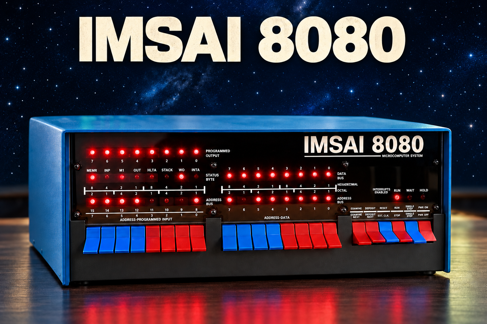

# IMSAI 8080 for MiSTer — Prototype **Build 1 October 2026 · MiSTer by Toby** An experimental IMSAI 8080 FPGA core with a green terminal, a virtual LED front panel and historical programs. The idea came from Toby; development was assisted by OpenAI Codex. See [CREDITS.md](CREDITS.md) for component authors.  *AI-generated illustration of the IMSAI 8080; not an original photograph.* ## Install on your MiSTer SD card 1. Extract the complete ZIP on your computer first. 2. Open the extracted package, then its **SD** folder. 3. Copy **_Computer** and **games** to the **top level of the MiSTer SD card**, merging them with the existing folders. On MiSTer this location is `/media/fat`. 4. Preserve your own modified IMSAI files before replacing matching files. Do not replace or remove other cores or games. 5. Do not copy the enclosing package folder or SD folder onto the card. Do not create games/games or _Computer/_Computer. 6. Start MiSTer and select an **IMSAI8080** launch entry in the **Computer** menu. | In this download | Destination on the SD card | | --- | --- | | SD/_Computer/IMSAI8080_20261001.rbf | /_Computer/IMSAI8080_20261001.rbf | | SD/_Computer/*.mgl (all seven entries) | /_Computer/ (keep their names) | | SD/games/IMSAI8080/ (complete folder) | /games/IMSAI8080/ | With a card reader: shut down/power off MiSTer before removing the card; copy the folders, safely eject the card and reinsert it before powering on. With WinSCP: use your existing authorized MiSTer connection, open **/media/fat** on the remote side, and copy _Computer and games from SD into that directory. Merge folders and review existing matching IMSAI files before replacing them. Restart the selected entry after the transfer. README, Documentation and Sources stay on your computer; only the contents of SD need copying to MiSTer. Nothing needs flashing into a core slot. ## First checks - **IMSAI8080 - Terminal:** type HALLO and press Enter. Check the terminal responds. - **IMSAI8080 - Tiny BASIC:** try `PRINT 84/2` and Enter; expected result: 42. - **IMSAI8080 - Super Star Trek:** wait for automatic loading and COMMAND?, then try SRS and LRS. Restarting the entry starts over. - **IMSAI8080 - Kill the Lights:** use keys 1 to 8 for the INPUT switches. F1 toggles RUN/STOP. F2 selects an address, F3 prepares a byte, F4 writes it while stopped, F5/F6 examine adjacent addresses. F12 opens the MiSTer menu. ## User guide and pictures After extracting, open **USER_GUIDE.html** in your browser for an offline guide with screenshots. No account or website is needed. The [Markdown user guide](USER_GUIDE.md) is also included. If your text editor does not follow the link, open the file directly from the Documentation folder.   ## Prototype limits and credits This package contains the tested build of 1 October 2026. The core binary is unchanged. Keyboard punctuation and Ctrl-C support remain incomplete. Panel controls are monitor-style controls, rather than a complete historical CP-A circuit replica. A complete Super Star Trek game has not been tested. Sources includes the project tree and build/test scripts; installed development tools are excluded. Individual component licenses and attribution remain in the sources and [licensing notes](SOURCES_AND_LICENSING.md). Historical programs are separate works. The bundled Microsoft/MITS BASIC runtime has no established redistribution permission; its provenance notes are retained. Suggestions, ideas and test reports are welcome. # User guide ## Starting a program The installed entries appear in MiSTer's Computer menu: | Entry | Purpose | | --- | --- | | IMSAI8080 - Terminal | Terminal demonstration with keyboard echo | | IMSAI8080 - Switch test | Simple input/output test | | IMSAI8080 - Complement test | Complementary output test | | IMSAI8080 - Kill the Lights | Historical LED game | | IMSAI8080 - Tiny BASIC | Palo Alto Tiny BASIC V3.0 | | IMSAI8080 - BASIC 4.0 | Altair 8K BASIC 4.0 | | IMSAI8080 - Super Star Trek | BASIC 4.0 with automatically loaded Star Trek | For Star Trek, wait for the listing to finish and COMMAND? to appear. Restarting its menu entry starts a new game. ## Front-panel controls | Key | Function | | --- | --- | | F1 | Toggle RUN/STOP; wait for STOPPED before modifying memory | | F2 | EXAMINE: enter a hexadecimal address | | F3 | Enter a hexadecimal byte to write | | F4 | DEPOSIT: write the prepared byte at the selected address while stopped | | F5 | Examine the next address | | F6 | Examine the previous address | | Enter or Escape | Finish address or byte entry | | F12 | Open the MiSTer menu | Addresses use four hexadecimal digits; bytes use two, entered with 0-9 and A-F. New digits shift older digits left; extra digits displace the oldest. The highlighted field identifies active input. When stopped, ADDRESS identifies the selected location, DATA and MEM show its contents, and WRITE shows the prepared value. During RUN, address and data display the CPU bus. Input goes to the terminal while running and to the panel field while stopped. EXAMINE does not change the program counter. RUN resumes the suspended program. These are monitor-style controls rather than a complete replica of the historical CP-A circuitry. ## First memory test Use the Terminal demonstration: 1. Press F1 until STOPPED appears. 2. Press F2 and enter 8000. 3. Press F3 and enter A5. 4. Press F4; MEM should show 8000 = A5. 5. Press F5, then F6; A5 should still be present. 6. Press F1 to resume; terminal input should work again. 8000 is unused by this demonstration. It is not generally safe to modify that address in other programs; Star Trek's loader uses upper memory for its script. ## Input limitations The keyboard supports uppercase letters, digits, space, Enter, backspace and some punctuation. Shift combinations for plus, asterisk and quotation marks, and Ctrl-C, remain incomplete. The font can display symbols that the keyboard cannot yet enter. F1 pauses the CPU; it does not replace BASIC's Ctrl-C break function. Restarting an entry reloads the image and discards unsaved changes. 

